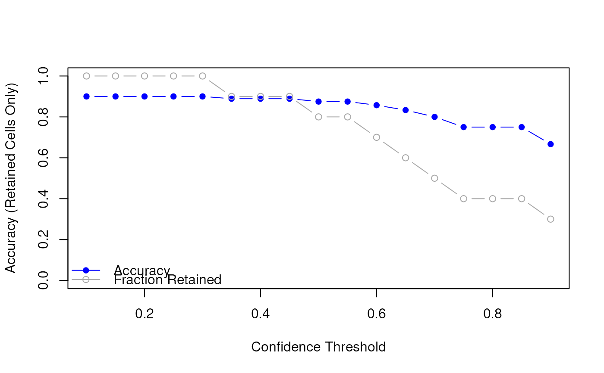

Optimize Confidence Threshold for Cell Type Prediction
Source:R/confidence_filtering.R
OptimizeConfidenceThreshold.RdFinds the confidence threshold that best balances prediction accuracy and retention rate. Requires ground truth labels for comparison.
Usage
optimizeConfidenceThreshold(
prediction_df,
truth,
thresholds = seq(0.1, 0.9, by = 0.05),
plot = TRUE
)Arguments
- prediction_df
A data frame from
predictRankModel (return_confidence = TRUE).- truth
A character or factor vector of true labels, aligned with rows of
prediction_df.- thresholds
Numeric vector of thresholds to test. Default is seq(0.1, 0.9, by = 0.05).
- plot
Logical. If
TRUE, generates a plot of accuracy vs. threshold. Default isTRUE.
Examples
# Simulated prediction data
pred_df <- data.frame(
cell_id = paste0("cell", 1:10),
predicted_cell_type = c(
"A", "B", "A", "B", "A",
"B", "A", "A", "B", "B"
),
confidence = c(
0.95, 0.87, 0.65, 0.48, 0.92,
0.55, 0.73, 0.33, 0.99, 0.60
)
)
# Ground truth labels
truth <- c("A", "B", "A", "B", "B", "B", "A", "A", "B", "B")
# Evaluate how accuracy and coverage change with threshold
summary_df <- optimizeConfidenceThreshold(pred_df, truth, plot = TRUE)

# View result
print(summary_df)
#> threshold accuracy retained retained_frac
#> 1 0.10 0.9000000 10 1.0
#> 2 0.15 0.9000000 10 1.0
#> 3 0.20 0.9000000 10 1.0
#> 4 0.25 0.9000000 10 1.0
#> 5 0.30 0.9000000 10 1.0
#> 6 0.35 0.8888889 9 0.9
#> 7 0.40 0.8888889 9 0.9
#> 8 0.45 0.8888889 9 0.9
#> 9 0.50 0.8750000 8 0.8
#> 10 0.55 0.8750000 8 0.8
#> 11 0.60 0.8571429 7 0.7
#> 12 0.65 0.8333333 6 0.6
#> 13 0.70 0.8000000 5 0.5
#> 14 0.75 0.7500000 4 0.4
#> 15 0.80 0.7500000 4 0.4
#> 16 0.85 0.7500000 4 0.4
#> 17 0.90 0.6666667 3 0.3